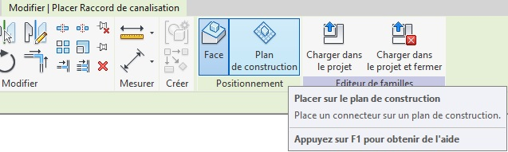
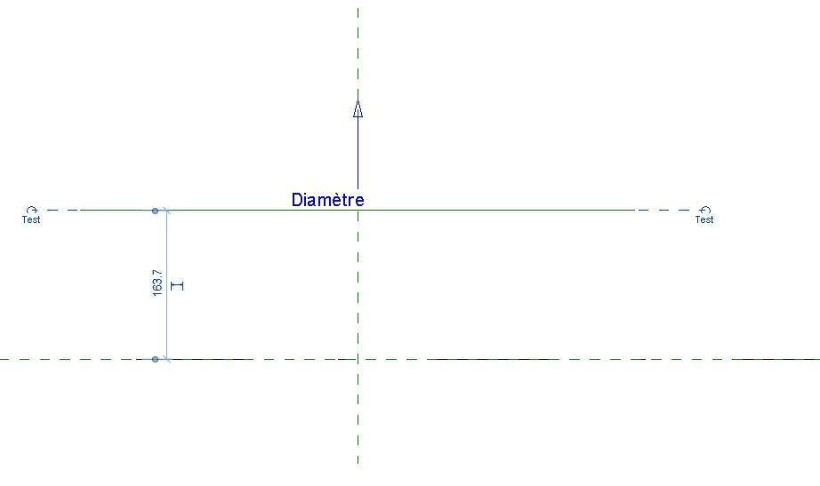
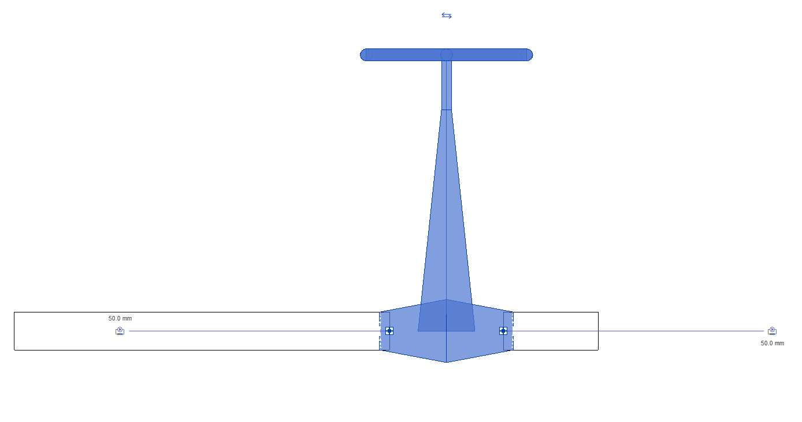
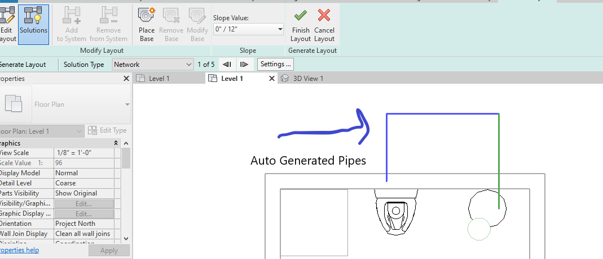

Today, let's pick up two recent MEP related discussions, on creating a new pipe connector for a hydraulic fitting family and on automatic pipe system routing, and a couple of other odd items of interest:
ReferencePlane for CreatePipeConnectorIn these times of accelerating change, the name of my team has changed as well.
From now on, I now work in the Autodesk DAS team:
I had an interesting and fruitful conversation with Edouard Vnuk in the Revit API discussion forum thread on CreatePipeConnector from ReferencePlane:
Question: I would like to create a connector from a reference plane.
The CreatePipeConnector function requires a PlanarFace.
Is there another function, or how can I transform a ReferencePlane into PlanarFace?
Answer: The ReferencePlane documentation sample code shows how to call GetPlane to retrieve the DB Plane.
More to the point, the CreateAirHandler SDK sample to how to use the CreatePipeConnector method.
When in doubt about how to call a Revit API method, one of the first places to always consult is the collection of Revit SDK samples. That step often helps and may save time and effort for you and others.
Response: I tried several codes without success.
First code:
Autodesk.Revit.DB.Plane plane
= Reference_plane.GetPlane();
ConnectorElement connector = ConnectorElement
.CreatePipeConnector( family_document,
PipeSystemType.Global, plane );
However, I can't compile this code, because the parameter must be a reference of planar face, and I don't know how to get it from the plane.
Second code:
ConnectorElement connector = ConnectorElement
.CreatePipeConnector( family_document,
PipeSystemType.Global,
Reference_plane.GetReference() );
This throws an exception during execution: The reference is not a planar face. Parameter name: planarFace.
These are the user interface steps I would like to complete programmatically:
I looked the CreateAirHandler SDK sample example. However, if I understood correctly, it creates the connectors from an extruded volume that provides the required planar faces.
Answer: Good. I see your point. Such situations arise regularly. You do have a real existing surface somewhere in the model that you can mount your connector on, don't you? Otherwise, you are modelling something that cannot be built. The existing surface is part of some BIM element geometry. You can identify the appropriate element and retrieve its geometry from the document by calling its Geometry property and providing an Options object with ComputeReferences set to true. Then, iterate through all its surfaces to identify the one you need. Et voila, that surface is equipped with a reference that you can use to create the connector.
Response: What you told me inspired me to think about it. I am creating a converter. And so, I create automatically families from basic geometric shapes. To add my connectors that do not rest on an existing face, I artificially added a cylinder that I masked where I wanted a connector. Here's what I get :
Pipe connectors in family
Pipe connectors in project
Thank you so much.
Many thanks to Edouard for raising this, the in-depth discussion and sharing his clean solution!
The other item I would like to pick up here is the Revit API discussion forum thread on auto routing a pipe system between plumbing fixtures:
Question: I'm wondering if there is something within the API that will allow me to place plumbing fixture families and then generate a plumbing layout like you can in Revit by using the "Create Plumbing System --> Generate Layout" or is this something I have to do one pipe, one connector at a time?
Select elements and click create system

Generate layout button
Auto generated pipes
Answer: You can create a placeholder piping system programmatically as well.
Or you can create a piping system right away. Here is a series of samples that create a minimal bunch of pipes for a rolling offset in lots of different ways.
Response: I am assuming from your response that if I want to connect from say, a water closet to a water heater, with pipes, I will have to explicitly call PipeCreate for each pipe, find connectors, insert each fitting... and then that process over and over until they connect? Is there a better work flow for what I'm trying to accomplish? Something similar to what is in the Revit user interface?
Answer: The discussions I pointed out already explain everything and cover your question in full. Actually, here are some additional relevant discussions of this topic:
The short answer is simply:
That is the gist of what I learned researching and implementing the rolling offset.
A recurring question on how to handle dialogue and failure messages keeps popping up when driving Revit programmatically, e.g., on saving families out via Revit API:
Question: I am collecting all the families in a project and saving them out via the API using
familyDocument.SaveAs(fileName);
Is there a way to catch the following dialogue box and perform an action?
For instance, record the warning and close the dialogue box?
Answer: The Revit API offers two different mechanisms to react to and handle dialogue and failure messages:
If all of these fail, a third mechanism is provided by the Windows API, which enables hooking into and reacting to almost any system event, including a dialogue showing.
All three approaches are discussed and compared by The Building Coder in the topic group on detecting and handling dialogues and failures.
Let's round off with a quick question on getting a reference to the upper face on rebar 51:
Question: This line of code works on some rebar '51' to retrieve a reference to the upper face, but not all:
var srep = $"{rebar51.UniqueId}:2000000:{1002000+typ}:LINEAR";
var refr = Reference.ParseFromStableRepresentation(
rebar51.Document, srep );
Is there a simpler method to get a Reference to the upper top face of the rebar form '51'?
Answer: You can ask the rebar for its geometry using the Element.Geometry property.
It takes an Options argument in which you can specify ComputeReferences = true.
Iterate over the geometry solids and their faces, pick the face that you want, e.g., based on its normal vector (pointing upwards) and vertex locations (maximal Z values), and use the reference that it comes equipped with.